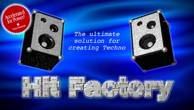

Bienvenue sur le site officiel de l'unique
logiciel Mac entièrement dédié
à la création de Techno.
Nouveautés:
- Hit Factory 3.2.1: REVOLUTIONNAIRE!
- Système de quantification automatique axé sur la boîte à rythmes (tout se synchronise automatiquement - être DJ devient iné!)
- + architecture de Plug-Ins (permettant l'import de nouveaux types de fichiers sons, de disposer de nouvelles interfaces, de nouveaux éditeurs...)
- + synthé plus performant (la note s'arrête lorsqu'on relâche la touche)
- + un mode d'emploi encore plus beau + 100 samples supplémentaires sur le CD!
- Bientôt disponible...
- Hit Factory 3.1.5 est arrivé: boutons 3D, possibilité d'utiliser directement les kits de batterie de votre expandeur MIDI depuis la boîte à rythmes, drag & drop, réverbération améliorée, possibilité de démarrer / arrêter la boîte à rythmes depuis le clavier du Mac... Essayez-le.
- Une nouvelle musique est téléchargeable. A écouter absolument!
- Pour les développeurs, il existe un Kit de développement (version 1.1) en C (68K et PPC), afin de lire très facilement des musiques créées avec Hit Factory dans vos programmes, et de pouvoir alors profiter de musiques de haute qualité.
- Hit Factory 2.2, dernière version de Hit Factory fonctionnant à la fois sur les Macintosh 68K et sur les PowerPC, mais beaucoup moins performante que la version 3.1, est téléchargable sur le site. Hit Factory 2.2 est venu au prix modique de 60FF.
- Le logiciel Rhythm Factory, projet aujourd'hui abandonné, qui émule une boîte à rythmes sur votre Mac, est disponible en version bêta pleinement fonctionnelle et gratuite! Cliquez-ici pour la télécharger.
Toutes les archives disponibles sur ce site sont au format Stuff-It.
Remarques, commentaires aussi bien sur ce site que sur Hit Factory? Vous êtes aussi un fanatique de Techno et vous voudriez créer votre page sur le site Hit Factory ou y proposer vos créations?
N'hésitez pas à me contacter: Pierre-Olivier Latour newman@club-internet.fr.

Dernière mise à jour le 6 juillet 1997